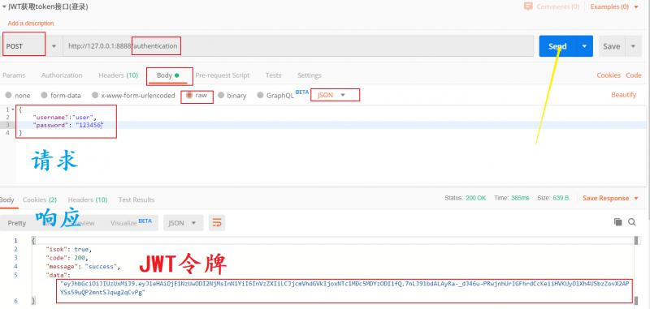
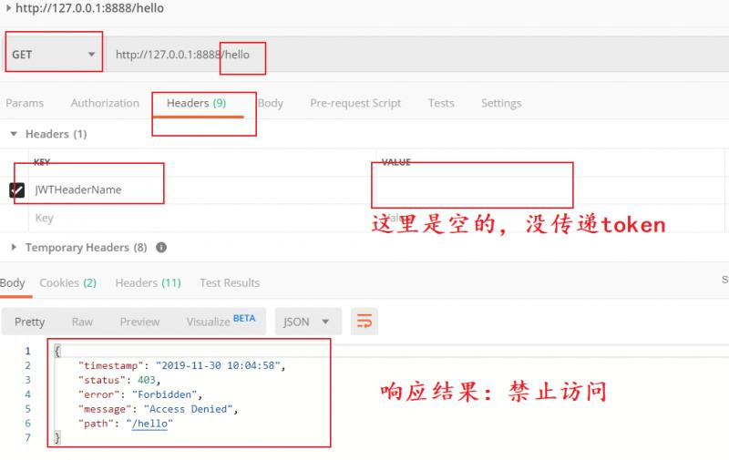

通过笔者前两篇文章的说明，相信大家已经知道JWT是什么，怎么用，该如何结合Spring Security使用。那么本节就用代码来具体的实现一下JWT登录认证及鉴权的流程。
以上的内容，我们在之前的文章中都已经讲过。如果仍然不熟悉，可以翻看本号之前的文章。
## 二、开发JWT工具类
通过maven坐标引入JWT工具包jjwt
<dependency>
<groupId>io.jsonwebtoken</groupId>
<artifactId>jjwt</artifactId>
<version>0.9.0</version>
</dependency>在application.yml中加入如下自定义一些关于JWT的配置
jwt:
header: JWTHeaderName
secret: aabbccdd
expiration: 3600000 写一个Spring Boot配置自动加载的工具类。
@Data
@ConfigurationProperties(prefix = "jwt") //配置自动加载，prefix是配置的前缀
@Component
public class JwtTokenUtil implements Serializable {
private String secret;
private Long expiration;
private String header;
/**
* 生成token令牌
*
* @param userDetails 用户
* @return 令token牌
*/
public String generateToken(UserDetails userDetails) {
Map<String, Object> claims = new HashMap<>(2);
claims.put("sub", userDetails.getUsername());
claims.put("created", new Date());
return generateToken(claims);
}
/**
* 从令牌中获取用户名
*
* @param token 令牌
* @return 用户名
*/
public String getUsernameFromToken(String token) {
String username;
try {
Claims claims = getClaimsFromToken(token);
username = claims.getSubject();
} catch (Exception e) {
username = null;
}
return username;
}
/**
* 判断令牌是否过期
*
* @param token 令牌
* @return 是否过期
*/
public Boolean isTokenExpired(String token) {
try {
Claims claims = getClaimsFromToken(token);
Date expiration = claims.getExpiration();
return expiration.before(new Date());
} catch (Exception e) {
return false;
}
}
/**
* 刷新令牌
*
* @param token 原令牌
* @return 新令牌
*/
public String refreshToken(String token) {
String refreshedToken;
try {
Claims claims = getClaimsFromToken(token);
claims.put("created", new Date());
refreshedToken = generateToken(claims);
} catch (Exception e) {
refreshedToken = null;
}
return refreshedToken;
}
/**
* 验证令牌
*
* @param token 令牌
* @param userDetails 用户
* @return 是否有效
*/
public Boolean validateToken(String token, UserDetails userDetails) {
SysUser user = (SysUser) userDetails;
String username = getUsernameFromToken(token);
return (username.equals(user.getUsername()) && !isTokenExpired(token));
}
/**
* 从claims生成令牌,如果看不懂就看谁调用它
*
* @param claims 数据声明
* @return 令牌
*/
private String generateToken(Map<String, Object> claims) {
Date expirationDate = new Date(System.currentTimeMillis() + expiration);
return Jwts.builder().setClaims(claims)
.setExpiration(expirationDate)
.signWith(SignatureAlgorithm.HS512, secret)
.compact();
}
/**
* 从令牌中获取数据声明,如果看不懂就看谁调用它
*
* @param token 令牌
* @return 数据声明
*/
private Claims getClaimsFromToken(String token) {
Claims claims;
try {
claims = Jwts.parser().setSigningKey(secret).parseClaimsJws(token).getBody();
} catch (Exception e) {
claims = null;
}
return claims;
}
}上面的代码就是使用io.jsonwebtoken.jjwt提供的方法开发JWT令牌生成、刷新的工具类。
@RestController
public class JwtAuthController {
@Resource
private JwtAuthService jwtAuthService;
@PostMapping(value = "/authentication")
public AjaxResponse login(@RequestBody Map<String, String> map) {
String username = map.get("username");
String password = map.get("password");
if (StringUtils.isEmpty(username) || StringUtils.isEmpty(password)) {
return AjaxResponse.error(
new CustomException(CustomExceptionType.USER_INPUT_ERROR,"用户名密码不能为空"));
}
return AjaxResponse.success(jwtAuthService.login(username, password));
}
@PostMapping(value = "/refreshtoken")
public AjaxResponse refresh(@RequestHeader("${jwt.header}") String token) {
return AjaxResponse.success(jwtAuthService.refreshToken(token));
}
}核心的token业务逻辑写在JwtAuthService 中
@Service
public class JwtAuthService {
@Resource
private AuthenticationManager authenticationManager;
@Resource
private UserDetailsService userDetailsService;
@Resource
private JwtTokenUtil jwtTokenUtil;
public String login(String username, String password) {
//使用用户名密码进行登录验证
UsernamePasswordAuthenticationToken upToken =
new UsernamePasswordAuthenticationToken( username, password );
Authentication authentication = authenticationManager.authenticate(upToken);
SecurityContextHolder.getContext().setAuthentication(authentication);
//生成JWT
UserDetails userDetails = userDetailsService.loadUserByUsername( username );
return jwtTokenUtil.generateToken(userDetails);
}
public String refreshToken(String oldToken) {
if (!jwtTokenUtil.isTokenExpired(oldToken)) {
return jwtTokenUtil.refreshToken(oldToken);
}
return null;
}
}因为使用到了AuthenticationManager ,所以在继承WebSecurityConfigurerAdapter的SpringSecurity配置实现类中，将AuthenticationManager 声明为一个Bean。并将"/authentication"和 "/refreshtoken"开放访问权限，如何开放访问权限，我们之前的文章已经讲过了。
@Bean(name = BeanIds.AUTHENTICATION_MANAGER)
@Override
public AuthenticationManager authenticationManagerBean() throws Exception {
return super.authenticationManagerBean();
}当用户第一次登陆之后，我们将JWT令牌返回给了客户端，客户端应该将该令牌保存起来。在进行接口请求的时候，将令牌带上，放到HTTP的header里面，header的名字要和jwt.header的配置一致，这样服务端才能解析到。下面我们定义一个拦截器：
@Slf4j
@Component
public class JwtAuthenticationTokenFilter extends OncePerRequestFilter {
@Resource
private MyUserDetailsService userDetailsService;
@Resource
private JwtTokenUtil jwtTokenUtil;
@Override
protected void doFilterInternal(HttpServletRequest request,
HttpServletResponse response,
FilterChain chain) throws ServletException, IOException {
// 从这里开始获取 request 中的 jwt token
String authHeader = request.getHeader(jwtTokenUtil.getHeader());
log.info("authHeader：{}", authHeader);
// 验证token是否存在
if (authHeader != null && StringUtils.isNotEmpty(authHeader)) {
// 根据token 获取用户名
String username = jwtTokenUtil.getUsernameFromToken(authHeader);
if (username != null && SecurityContextHolder.getContext().getAuthentication() == null) {
// 通过用户名 获取用户的信息
UserDetails userDetails = this.userDetailsService.loadUserByUsername(username);
// 验证JWT是否过期
if (jwtTokenUtil.validateToken(authHeader, userDetails)) {
//加载用户、角色、权限信息，Spring Security根据这些信息判断接口的访问权限
UsernamePasswordAuthenticationToken authentication
= new UsernamePasswordAuthenticationToken(userDetails, null,
userDetails.getAuthorities());
authentication.setDetails(new WebAuthenticationDetailsSource()
.buildDetails(request));
SecurityContextHolder.getContext().setAuthentication(authentication);
}
}
}
chain.doFilter(request, response);
}
}在spring Security的配置类（即WebSecurityConfigurerAdapter实现类的configure(HttpSecurity http)配置方法中，加入如下配置：
.sessionManagement()
.sessionCreationPolicy(SessionCreationPolicy.STATELESS)
.and()
.addFilterBefore(jwtAuthenticationTokenFilter, UsernamePasswordAuthenticationFilter.class);测试登录接口，即：获取token的接口。输入正确的用户名、密码即可获取token。

下面我们访问一个我们定义的简单的接口“/hello”,但是不传递JWT令牌，结果是禁止访问。当我们将上一步返回的token，传递到header中，就能正常响应hello的接口结果。
